TL;DR: Virtual try-on keeps the person and swaps the garment; RoboTryOn keeps the demonstrated motion and swaps the human for the robot. From an egocentric human video alone, it synthesizes a robot demonstration (video and joint actions) that teaches a policy tasks it has never been teleoperated on.
Robot foundation models have shown remarkable performance in robot control, yet adapting them to a new task still relies heavily on teleoperated demonstrations. Egocentric human videos offer a scalable substitute, but overlaying rendered robots on human videos or retargeting human poses into robot actions leaves significant visual or action gaps for high-DoF robot embodiments. We propose RoboTryOn, which treats human-to-robot translation as virtual try-on: RoboTryOn converts a human video into a video of the target robot specified by a reference image, while preserving the original task, objects, and background. We translate selected keyframes autoregressively and use them to guide video synthesis with motion conditioned on the human hand skeleton, and an inverse dynamics model with depth features infers the action labels. Across multiple humanoid embodiments, policies trained with our synthetic data improve the average success rate on novel tasks, including bimanual manipulation, from 2% to 60% without any real robot demonstration of those tasks, and match policies trained on teleoperated demonstrations at about a third of the collection cost.
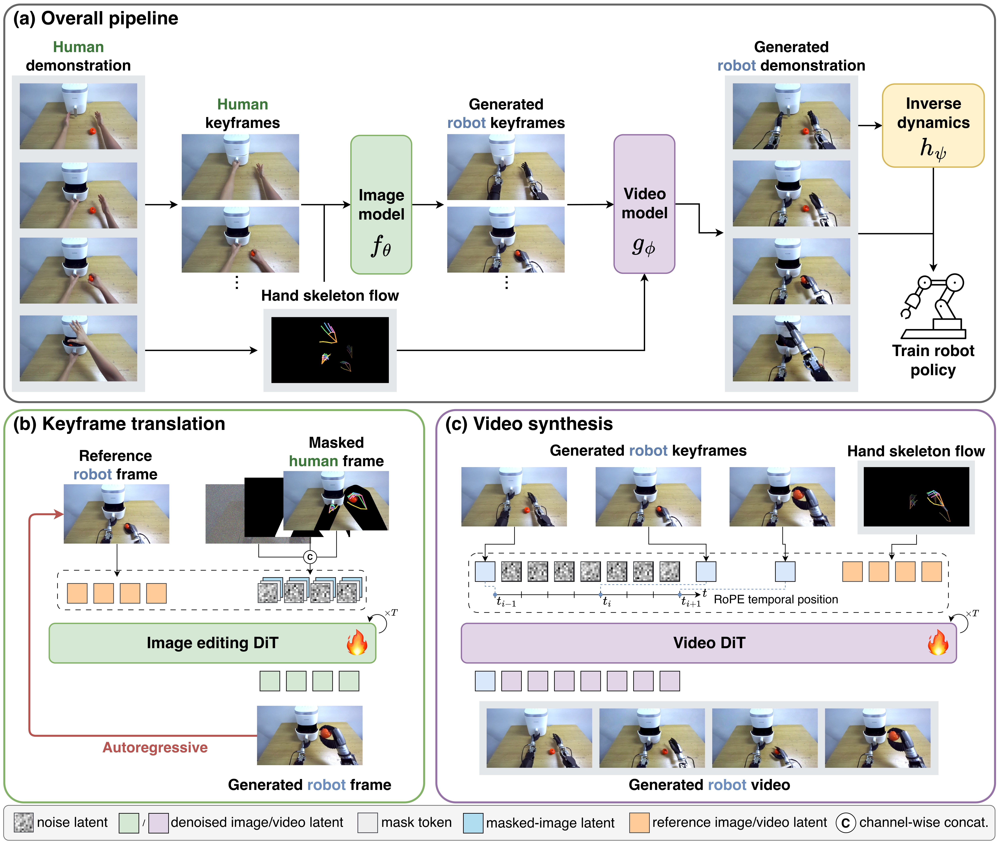
1. Keyframe translation. An image model inpaints the masked human arm with the target robot, guided by the hand skeleton, using the previous robot keyframe as the reference.
2. Video synthesis. A video model fills in the motion between the robot keyframes, following the human hand-skeleton flow.
3. Action labeling. An inverse dynamics model reads joint-space actions from the synthesized video; the wrists are corrected with the reconstructed human hands.
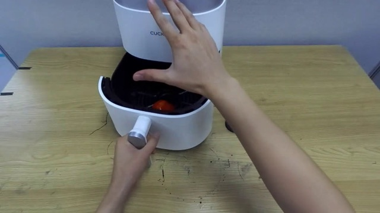
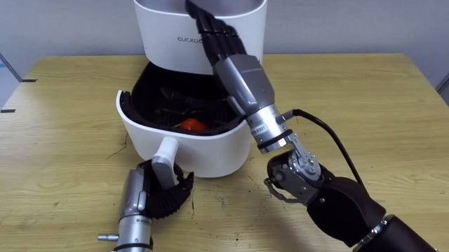
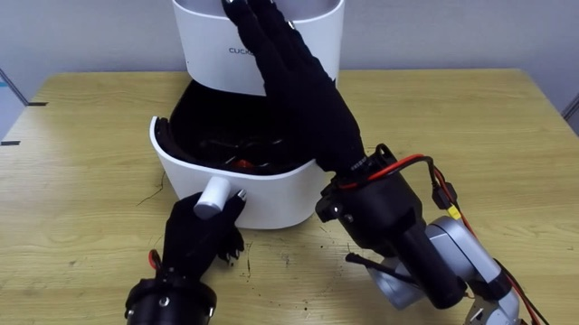
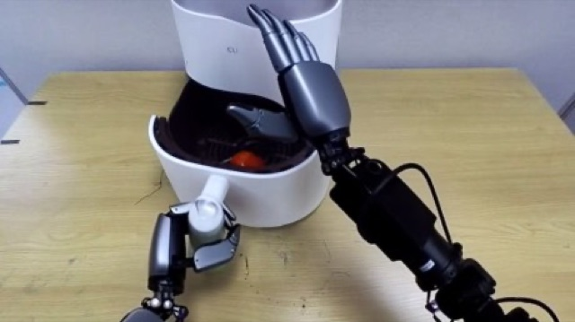
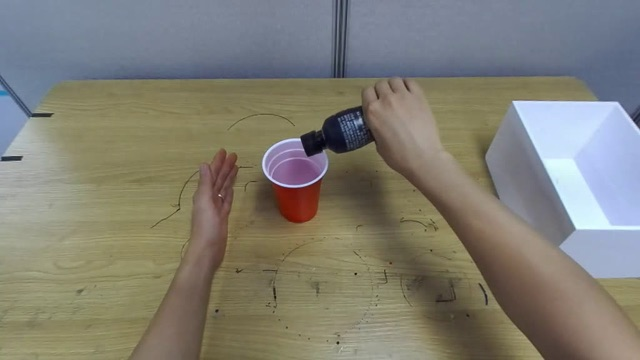
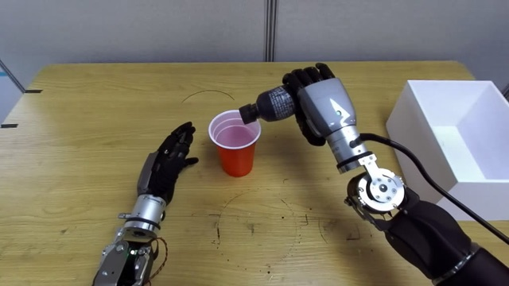
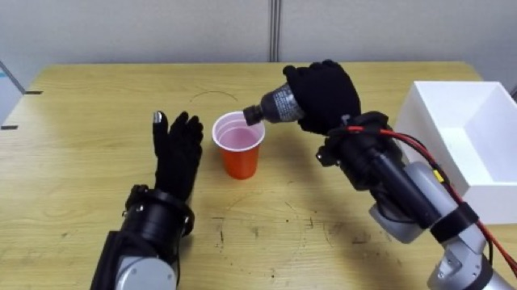
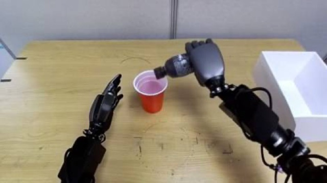
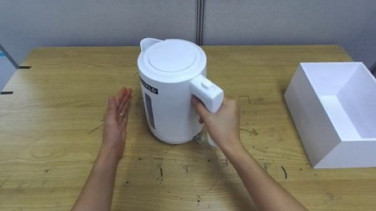
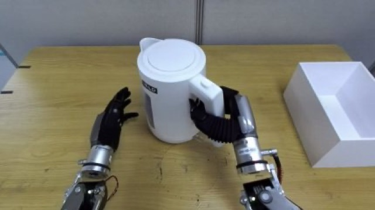
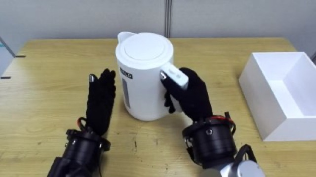
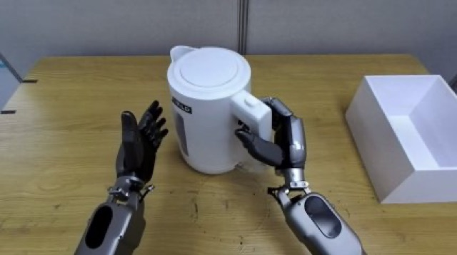
| Method | OpenArm | RB-Y1 | ||
|---|---|---|---|---|
| In-domain | Out-of-domain | In-domain | Out-of-domain | |
| Teleop only | 47.3 | 3.1 | 69.6 | 1.0 |
| + EgoMimic | 50.0 | 5.1 | 63.4 | 5.1 |
| + Masquerade | 67.9 | 8.2 | 63.4 | 7.7 |
| + RoboTryOn (Ours) | 75.9 | 73.0 | 79.5 | 46.9 |
| RoboTryOn only (no teleop) | 57.1 | 48.5 | 60.7 | 40.3 |
Success rate (%) of π0.5 over 28 trials per task. Out-of-domain: 7 tasks (novel object, goal, skill, and bimanual) with human videos only.
Left: one of the human videos the policy learned from. Right: the trained policy on the robot.
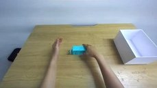
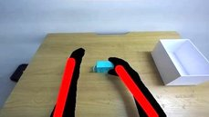
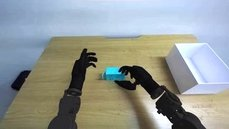
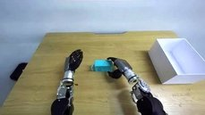
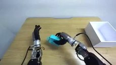
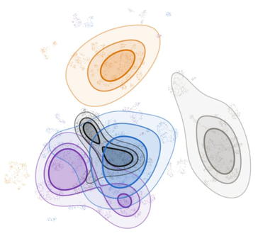
In the policy’s SigLIP feature space, RoboTryOn’s synthesized frames overlap real robot frames, while raw, masked, and overlaid human videos form separate clusters (Fréchet SigLIP distance 125.5 → 32.7). So, unlike EgoMimic and Masquerade, which must mask or overlay every camera frame during rollouts, RoboTryOn needs no post-processing at test time.
Retargeting maps the reconstructed human hand onto the robot. RoboTryOn instead labels the synthesized robot video with an inverse dynamics model (IDM).
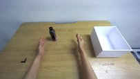
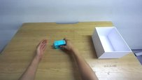
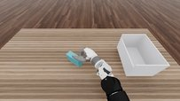
✗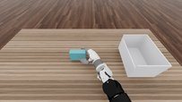
✓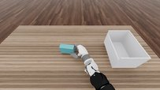
✓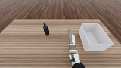
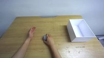
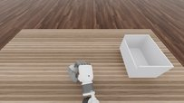
✗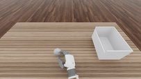
✗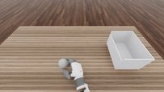
✓2× more replays succeed. Retargeted hands reach the object but fail to grasp it; the IDM reads the grasp off the generated robot hand.
IDM labels match the teleoperated distribution; retargeted hand actions do not.
Our data yields policy gradients aligned with those of teleoperated data (cosine 0.53 vs. ≤0.17), and the policy trained on our data stays in the teleoperated action range on new tasks (55% vs. ≤10%). Both baselines use retargeted actions.
@article{lee2026robotryon,
title = {Synthesizing Dexterous Robot Demonstrations from Human Videos via Virtual Try-On},
author = {Lee, Seungyong and Jang, Suhyeok and Kim, Minyoung and Shin, Jinwoo},
journal = {arXiv preprint arXiv:2611.05163},
year = {2026}
}